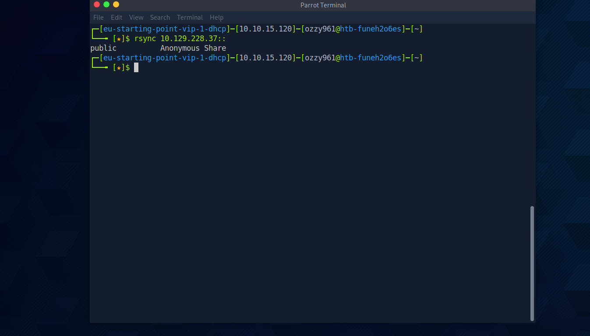
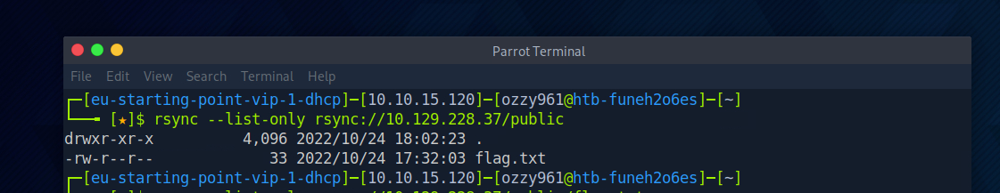
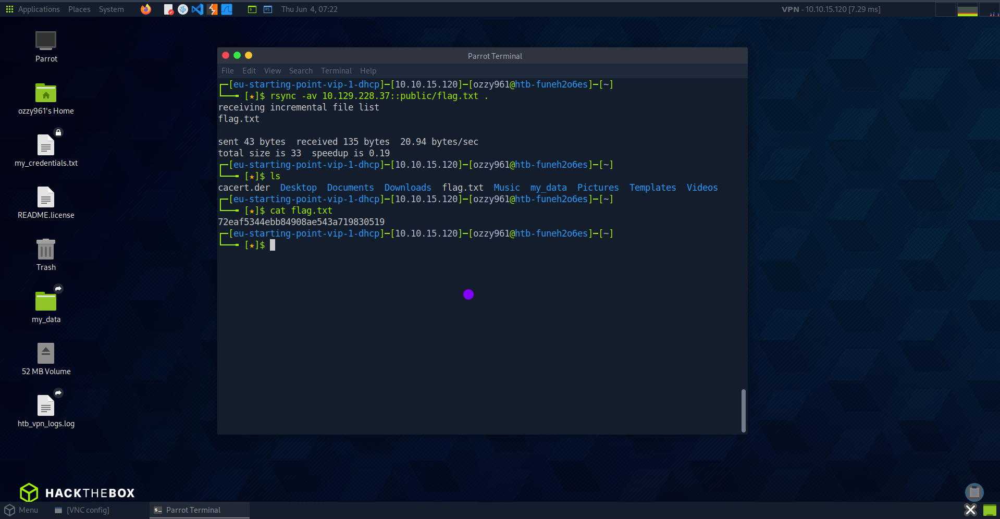

Identifying the exposed rsync service
I started with a full TCP port scan combined with service and version detection. The objective was to identify the complete attack surface and determine which service required deeper enumeration.
nmap <TARGET_IP> -p- -sV -vv -Pn
Nmap identifying rsync on TCP port 873.
PORT STATE SERVICE REASON VERSION
873/tcp open rsync syn-ack (protocol version 31)TCP port 873 was exposed and identified as an rsync service using protocol version 31.
Port 873 is commonly associated with the rsync daemon. Since rsync can expose named modules that contain files and directories, the next step was to determine whether the service allowed anonymous enumeration.
Discovering available rsync modules
I queried the rsync daemon directly to determine which modules were publicly accessible.
rsync --list-only <TARGET_IP>::Enumerating the modules exposed by the rsync daemon.
The service returned a publicly accessible module:
- public — publicly accessible rsync module.
- The module was available without credentials, indicating anonymous access.
The rsync daemon exposed a public module that could be enumerated without authentication.
The double-colon syntax is important because it tells rsync to communicate directly with an rsync daemon rather than using an SSH-based remote-shell transport. Rsync documents the same daemon-access model through host:: and rsync:// URLs. :contentReference[oaicite:2]{index=2}
Listing files inside the public module
After identifying the public module, I queried it directly to enumerate the files available within the share.
rsync --list-only rsync://<TARGET_IP>/public
Listing the contents of the publicly accessible rsync module.
The public module contained flag.txt.
At this point, the attack path was straightforward: the rsync daemon was publicly accessible, the public module required no authentication, and the module directly exposed the target file.
Understanding the transfer command
Before retrieving the file, I reviewed the rsync options relevant to the transfer command used in the lab.
rsync -av <TARGET_IP>::public/flag.txt .- -a — archive mode; enables recursive transfer and preserves common file attributes.
- -v — verbose output; displays additional information about the transfer.
- -z — compression; compresses file data during transfer. It was not required for the final lab command because the retrieved file was small.
- :: — connects to the rsync daemon using the native rsync protocol.
Rsync's official documentation defines -a as archive mode, -v as verbose output, -z as transfer compression, and --list-only as listing source files without transferring them. :contentReference[oaicite:3]{index=3}
Downloading the flag
With the file confirmed inside the public module, I retrieved it directly to the local working directory.
rsync -av <TARGET_IP>::public/flag.txt .
Downloading flag.txt from the anonymous rsync module and reading the retrieved file.
I then confirmed that the file had been transferred successfully and displayed its contents:
ls
cat flag.txtThe exposed rsync module allowed the remote flag.txt file to be downloaded without authentication.
The lab was completed without requiring credential attacks, exploit development or privilege escalation.
Breaking down the assessment
Synced was primarily an exercise in identifying and interacting with an exposed rsync daemon. Once port 873 was discovered, the assessment moved directly toward module and file enumeration.
Nmap → 873/tcp → rsync → Anonymous module enumeration → public → flag.txt → Rsync file retrieval → Flag
The core security issue was improper exposure of the rsync daemon and anonymous access to a module that contained sensitive data.
Commands used during the assessment
The assessment followed a simple rsync enumeration and retrieval workflow:
- nmap -p- -sV — identify exposed ports and fingerprint services.
- rsync --list-only <TARGET_IP>:: — enumerate publicly visible rsync modules.
- rsync --list-only rsync://<TARGET_IP>/public — enumerate files exposed by the public module.
- rsync -av <TARGET_IP>::public/flag.txt . — download the discovered file.
- cat flag.txt — read the retrieved file and complete the lab.
Port → Service → Module → File → Retrieval
Securing rsync
The weakness demonstrated by Synced was primarily a configuration and access-control problem. An rsync daemon should not expose sensitive data to anonymous clients without a deliberate security requirement.
- Restrict rsync services to trusted hosts and networks whenever possible.
- Disable anonymous access when it is not explicitly required.
- Apply appropriate authentication and authorization controls to exposed modules.
- Ensure publicly accessible modules contain only data intended for anonymous users.
- Monitor rsync connections and unusual file access activity.
- Review module configuration regularly to prevent accidental exposure of sensitive files.
Lessons from Synced
Synced reinforced several practical lessons about network services, enumeration and access controls:
- Identify uncommon services. Port 873 is less common than typical web or remote administration ports, but it can expose valuable data when rsync is misconfigured.
- Enumerate the service after finding the port. Identifying rsync was only the first step; listing its available modules revealed the actual attack surface.
- Anonymous access can be dangerous. The public module was accessible without authentication, allowing direct inspection of its contents.
- Follow the data. Once the public module was discovered, file enumeration immediately identified flag.txt.
- Native protocol tooling is often enough. No exploit was necessary. Understanding rsync's daemon syntax and module structure was sufficient to retrieve the file.
Tools used
The main tools and techniques used during the exercise were:
- Nmap — full TCP port and service enumeration.
- Rsync — direct interaction with the exposed rsync daemon.
- Module enumeration — identifying publicly accessible rsync modules.
- File enumeration — discovering files exposed inside the public module.
- File retrieval — downloading the discovered file to the local system.
Related resources
The resources below cover the Synced machine and the rsync daemon, module enumeration and file-transfer concepts demonstrated throughout the lab.